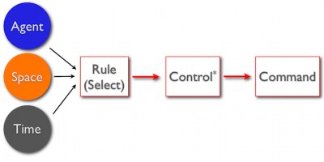
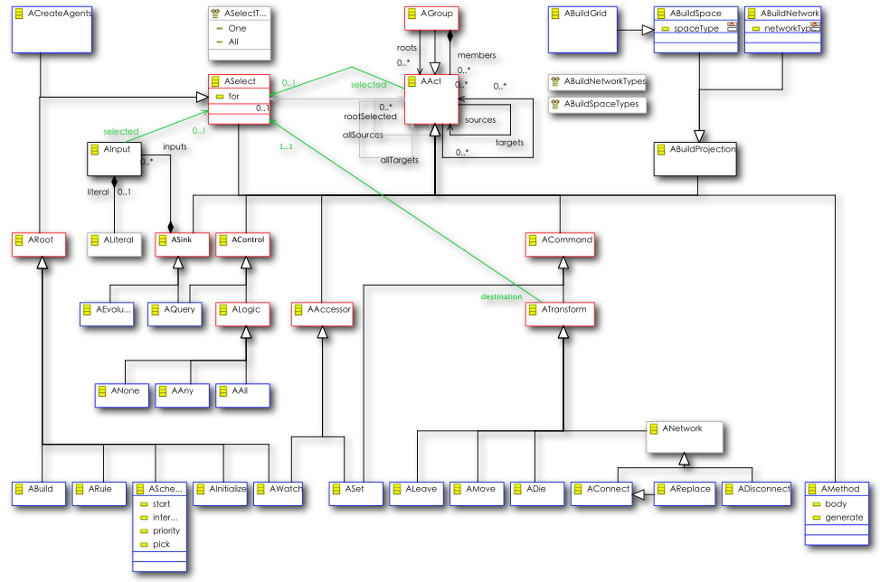
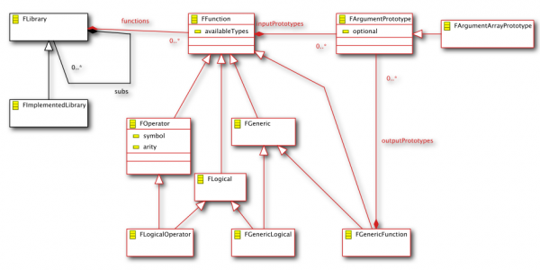

'The Agent Modeling Framework MetaABM / Acore Meta-Model
Important Note
The MetaABM "MetaABM" meta-model will be transitioning to a significantly changed "Acore" meta-model as part of the overall AMP project plan. At the moment, MetaABM is serving as the AMF meta-model. We'll be providing automated migration tools, so developers can use it without worry about future compatibility. To avoid having to re-edit all of this documentation, we'll be referring to "Acore" below, unless we anticipate a change in which case we'll tag that with (metaabm).
Background
The foundation of the Agent Modeling Framework is "Acore" (metaabm). It's is designed to be a general representation or Òmeta-modelÓ for Agent-Based Models. As the name implies, the "Acore" model (will be) analogous to the EMF "ecore" meta-model but provides representations that are suited to agent-based and other modeling (in the "modeling and simulation" sense of the word) oriented domains. Models can be fully defined within the Acore lingua franca and model implementations can then be generated from those models with no further coding or configuration. The system as whole currently provides a hierarchical visual editor and reference implementations targeting the Escape, Ascape and Repast Simphony platforms. MetaABM is built upon the Eclipse Modeling Framework and a number of other Modeling project technologies, including Xpand. AMF is fully integrated with the Eclipse IDE platform, but Acore models themselves need have no dependencies on any particular technology beyond XML/XSD. We do not imagine that the meta-model covers every possible model instance, or that we have not overlooked important issues.
The Acore / MetaABM meta-model is made up of three main packages. This is all based on MetaABM, and while names and important details will change for Acore, the core design should be quite similar.
Structure
Diagrams
Our first diagram depicts the core structural design of the MetaABM system -- again, much of this will carry through to Acore.

There seems to be a lot going on here, but the basic components are pretty straightforward as we can see in the next diagram.
Key Collaborations

Core interactions are in Red. The meta-model structure is essentially a Composite pattern.
What it Means
- Every model has at its root a Context (Scape).
2 Contexts are Agents that are capable of containing other Agents (including other contexts, naturally).
- (Meta-level) Contexts (Scapes) contain (meta-level) Agents at the model (Design-time) level. At runtime, (model-level) Context instances defined in a (meta-level) SContext will contain (model-level) agent instances of the defined (meta-level) SAgent. This sounds more complicated than it is, so let's look at a simple example. Suppose we create a new Context, and give it a label of ÒWiki ExampleÓ. Within that Context, we create an Agent and give it a label of "IndividualÓ and another Agent with the label ÒBlockÓ. At runtime when we are actually executing the model we will have one WikiExample model instance which contains a number of Individuals.
- Agents contain Attributes, such as Vision and Age. Context attributes often represent input parameters for contained agents. For example, our Wiki Agent Context might contain an Individual Count as well as a Minimum Age and Maximum Age.
- Contexts (Scapes) can contain Projections (Spaces), which represent some kind of spatial or structural interaction space for the agents; either a grid, a continuous (euclidian) space, or a network (graph) or geographic space of some kind. For example, we might want to have a City that contains Blocks and that an Individual can move around within.
- Agents are Actables and thus can contain any number of behaviors called ÒActionsÓ, described in detail in the next section. Actions can describe individual behavior, and at the Context (Scape) level can define how member Agents and Projections are created.
- Styles provide a mechanism for defining generic visualization behavior for Agents and so are also Actables. For example, an Agent might have an Action that says effectively Òdraw a red circle shaded red for the wealth of the agentÓ.
AMF Hierarchical Editor Example
Actions (Behavior)
Actions are a fundamental aspect of the metaABM representational scheme, as they allow the definition of arbitrary but high level behavior for agents. They are also conceptually more challenging as unlike with structure they have no direct analogies to past agent representation -- or as far as we have been able to tell, Model-Driven Software Development --approaches. While the Acore Actions meta-model doesn't look like a programming language, it is useful to see it as a programming language without a concrete syntax. Because it doesn't define an actual concrete language implementation, it can be suitable for any number of potential text and visual languages. The default editor provided with AMF is hierarchical which isn't ideal for representing Acore Actions, but other text and visual editors are being developed and refined. Conceptually, Acore Actions is a kind of
data-flow language, though the Actions design also carries aspects of
functional and
logical languages.
Basic Design

Actions represent Queries (Controls) on agents and Transformations, or Commands, on the result of those queries. Queries, Transformations and other Actions are connected in a series of sources and targets, in which each child target carries the execution and data context for it's particular path.
- We define a Select Action, which determines what agent we are looking for, what space we are looking for that agent within, and what time (speaking very broadly, e.g. at startup, every period, at a scheduled time, on change in a specific state) we would like the behavior to occur. All Actions begin with a Root Action such as a Rule; these Actions trigger all resultant behavior.
- Then query terms and set operations are applied to that selection.
- Finally, commands are executed against the results of those queries.
Examples
Simple Example
In the following example, we want to create a set of actions that accomplish this task for the agent. It's always easier to express these things in natural languages! Our aim is to get as close as we can to that ease of expression without losing necessary detail and context.
"Search for a random agent within my vision that is the same age as I am. Find a location next to that agent that is not already occupied and move to it."

We define this model above in (conceptual) graphical and textual languages. No matter what tool we use to define the model in, the basic logic is the same..
- Create a Rule that will trigger the behavior. In this case, we want this rule to apply to all "Individual" agents within the model. (We can define the space as well, but that's not relevant yet.
- Create a child Select Action that will find our partner. Two important things to note here:
- The selection occurs "upon" the "find partner" select. On other words, for each Individual in the model, we'll be searching from the point of view of that agent to some other selection of agents.
- We also need to define what type of agent we want and in this case the space does matter. We want to be sure that the agent is nearby in the City space not any other space we might have defined.
- Create two child Query Actions:
- We want to search using a function for nearness, "within", which takes a parameter of vision. Note that the spatial functions are all polymorphic -- if we decided later on that we would rather search within say "Kevin Bacon space", that is a graph structure representation of space, we would only need to change the space we've defined in Select Partner. (Design discussion note: re-examine this issue WRT possibility of allowing users to search in multiple spaces within the same query.)
- We also want to search for someone who is the same age as us. This highlights the importance of the idea of the Selection in the Actions design. We're qualifying Age by our Partner and ourselves. The seleciton carries throughout the flow of execution and this context is an explicit part of the entire structure. Note that this is very different from the way control flow works in a traditional Imperative language such as Java.
- Intersect (All in metaabm) these two queries. This delineates the end of the selection definition for any target Actions.
- Select a neighbor. Again, we can see the importance of Selections. Here, we are selecting from the point of view of the partner, not the initial agent that the current Rule is being executed for. Note that this time our target agent is a "Block", that is, a location within the city.
- As above, define some queries. This time we want only those agents that are available and neighbors of our partner.
- And another intersection..
- Finally, we move to the location we've found. All that's required at this point is to specify:
- The movement selection, or those agents that are moving, which in this case is the original agent we're executing the rule for, and
- The destination, which is the cell that we've found. Note that the framework infers from the space definition that the Block agent is capable of hosting the Individual.
AMF Hierarchical Editor
Here's how the model looks in the default Acore editor. Note that we've collapsed the somewhat awkward multiple paths.

Code
Why would we want to define our behaviors at such a high-level? There are a lot of reasons, including ease-of-use, transparency, parallelization and optimization, and all of the other MDSD goodies. You might want to take a look at what the code generated by AMF from this specification looks like in two POJO ABM APIs.
Ascape
Repast Simphony
Design in Depth

Details
In the diagram above, all meta-objects are ActionsAInput, ALiteral, and the enumerators (lists of options) are Acts. Blue Acts are concrete (you can create and use them directly). Red indicates a key meta-object collaboration.
- An Act is anything that might happen during the execution of an Agent-Based Model.
- Acts are targets and sources of one another, but an Act can never have itself as a source. (That is, Acts are acyclic, but branches can re-converge. When we refer to an Act source or target, we typically mean to include all ancestors or descendants, not just the immediately connected Act.)
- Acts reference a ASelect, referred to as the ÒselectedÓ relation. An ASelect represents the model aspects that the Act is working within; that is, the spatial, temporal and type (agent) ÒworldÓ that is currently being selected.
- ATransforms also specify a ÒdestinationÓ ASelect. This represents aspects that the selected agent(s) will transform to. For example, an AMove may use an ARule to select all SugarAgents (type) in the SugarGrid (space) every period (time) and move them to a destination of a neighboring SugarCell (type) in the SugarGrid (space, with time implicit).
- All Acts have as their root-most source Act an ARoot. These are added first to any agent behavior and act as triggers for all target behavior. For example, an AWatch will ÒfireÓ any time the watched attribute is modified. (As the diagrams do not refer to elements outside of the current package, we cannot see here that AAccessor includes a reference to some SAttribute, but it does. To see these kinds of relationships you will want to refer to the metaabm.ecore file itself.)
- ASinks are Acts which use some FFunction (see next section) to interpret state in the form of AInputs. Inputs can come from selected agent attributes, other Acts, or literal values.
- AControls determine wether target acts are executed and against what agents. They are in some sense query terms.
- ACommands trigger some model state change (ASet) or spatial transformation (ATransform).
Functions
Design

The Function representation is relatively simple. As indicated above, Functions are used by Sinks to interpret some model state. Functions are broken into two broad types; Operators, which are simple calculations sharing the same type, and Generic Functions that can represent any general function that takes some well-defined input(s) and returns some well-defined output(s). Conceptually, functions can return multi-values, but that is not currently implemented in the reference targets because of limitations of the target language Java. Logicals return some binary result and that is used by Queries to decide wether target Actions apply to a particular selection. Input types should be defined as generally as possible.
Built-in Functions
Acore comes with a built-in library of core functions. See the
table of core functions.
Acknowledgements
The AMF meta-model started life as "score"
1, a component of the Repast Simphony environment. It wasn't fully utilized within Simphony, and migrated from there to the MetaABM project. The MetaABM project defined a complete editor, code-generation and model execution suite that formed the initial AMP AMF contribution. Argonne National Labs supported the initial development of score and Metascape, LLC continued development of MetaABM and both agreed to contribute the relevant IP to the Eclipse project in 2009. The previous meta-models serveed as a Òstraw-agentsÓ that have allowed the community to refine and explore key representational issues. Some of the following discussion is drawn from previous Metascape documentation and is released by the author (Miles Parker) under ECL.
References
- AGENT-BASED META-MODELS, Parker, et.al.
http://www.agent2005.anl.gov/2006procpdf/Parker_Agent_2006.pdf
- Howe, et. al. CONTAINING AGENTS: CONTEXTS, PROJECTIONS, AND AGENTS
http://www.agent2006.anl.gov/2006procpdf/Howe_Agent_2006.pdf